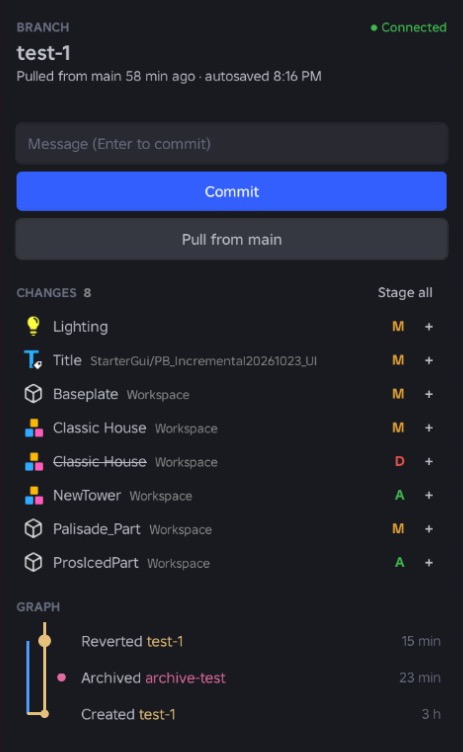
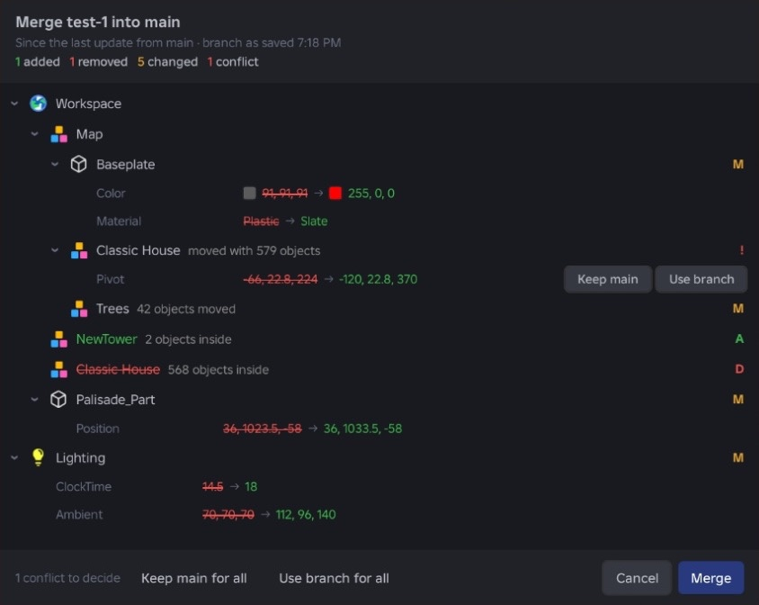

Branches for your Roblox places
Build a new map, lobby or UI in a branch, see exactly what changed, and merge it back into your game. Like Git, for your places.
irm https://__SITE__/install.ps1 | iex
curl -fsSL https://__SITE__/install.sh | sh
Paste it in PowerShell (search for it in the Start menu). It installs RoGit and its Studio plugin, and RoGit runs in the background from then on.
Paste it in Terminal (in Applications → Utilities). It installs RoGit and its Studio plugin, and RoGit runs in the background from then on.
Run it again to update. Other ways to install
Quick start
From install to your first branch
RoGit has two parts: the Studio plugin, where you use it, and RoGit itself, which runs quietly in the background and keeps your branches. The installer sets up both.
-
Install
Run the install command above. RoGit starts right away, and from then on whenever you log in.
-
Init in Studio
Open your game's start place, then Plugins → RoGit and click Init. Save the place afterwards. Once per game.
-
Make a branch
Type a name under New branch. RoGit copies main and opens the branch in its own window.
In a branch
Source Control for your map
The panel lists every change as you build: parts, models, UI, lighting and terrain.
- Changes as you build. Every edit shows up within a moment, even in places with 100,000 objects.
- Stage, commit, discard. Commit some changes and keep working on the rest. Discard puts things back, and Ctrl+Z undoes that too.
- Pull from main. Bring your game's newer changes into the branch whenever you like.
- Autosave. If Studio closes before you save, the branch offers your unsaved work back.

In main
Merges you can read
Before anything changes in your game, RoGit shows what the branch did, laid out like the Explorer.
- Exact changes. Old and new values side by side, colors included.
- Moves fold up. A model moved with 579 parts is one line, not 579.
- Conflicts. Something changed in both? Pick Keep main or Use branch, one by one or for all.
- One undo step. The whole merge undoes with a single Ctrl+Z.

Stays on your computer
Branches are place files in RoGit's folder on your computer. No account, API key or cloud.
Scripts left alone
RoGit doesn't touch scripts, or folders that hold scripts. Keep them however you like.
Fast in big games
After one copy of the place, only the objects you change are sent.
Terrain, meshes, unions
Terrain voxels, material colors, MeshParts and unions merge like everything else.
A graph of it all
Every branch, commit, merge and pull in one graph. Click one to see what it changed.
All your games
One RoGit handles every game. Open a place, and it knows which game it belongs to.
Install
Install, update and uninstall
Help
Common questions
The panel says RoGit isn't running
RoGit starts in the background when you log in. To start it now, run the install command again, or run rogit serve in a terminal and leave it open.
Where are my branches?
In %LOCALAPPDATA%\rogit\games on Windows and ~/.rogit/games on macOS, with a folder for each game. Each branch is a place file you can also open yourself.
What about my scripts?
RoGit leaves scripts alone, and any folder that holds a script. Branches and merges are about everything else in the place, so keep scripts however you like.
The terminal says rogit isn't found or isn't recognized
You only need the terminal for rogit commands. Terminals read your PATH when they start, so open a new one.
Does RoGit send my data anywhere?
No. Your places, branches and edits stay on your computer. RoGit makes two kinds of requests of its own: it asks Roblox's public API for your game's name and start place when you set it up, and it asks GitHub every few hours whether there's a newer version of RoGit. Neither includes anything about you or your places.
Windows or my antivirus warns about RoGit
RoGit is new and not signed yet, so Windows treats it as an unknown program. It's open source, and GitHub builds every release from the code in its repository. If Windows shows "Windows protected your PC", click More info and then Run anyway. If your antivirus removed it, you can report it as a false positive to your antivirus.
How do I update?
Run rogit update in PowerShell (Windows) or Terminal (macOS), or the install command again. It updates RoGit and its plugin, and restarts RoGit. The plugin tells you when there's a new version.
How do I uninstall?
Run rogit uninstall. It stops RoGit and removes it, its plugin and its PATH entry. Your branches stay in RoGit's games folder; delete that too if you don't need them.